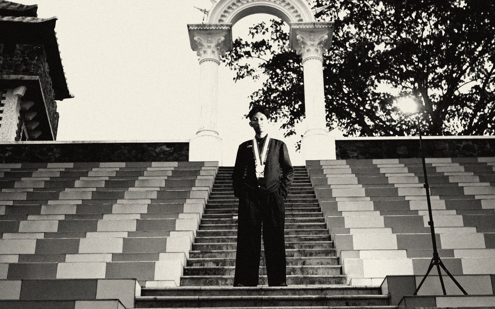

01 · WEB■
Aplikasi web full stack.
Dari perancangan basis data, back end, sampai tampilan antarmuka.
- HTML, CSS, JavaScript
- PHP, Laravel, MySQL
- Bootstrap, Sass, jQuery

Saya Steven, lulusan S1 Informatika dari Universitas Mercu Buana Yogyakarta yang memiliki minat kuat dalam pengembangan web full stack dan machine learning.
Saya berpengalaman mengembangkan aplikasi web menggunakan HTML, CSS, JavaScript, PHP, dan Laravel. Saya juga memahami pengembangan sistem berbasis data dengan Python dan machine learning, serta mengenal teknologi AI dan pengelolaan basis data.
Saya senang belajar melalui praktik dan terus mengembangkan kemampuan lewat proyek akademik maupun proyek nyata. Saya bersemangat membuat sistem yang fungsional, efisien, dan mudah digunakan, sambil terus mempelajari teknologi baru dan mengasah kemampuan pemecahan masalah.
Dari perancangan basis data, back end, sampai tampilan antarmuka.
Analisis data dan model prediksi untuk kasus nyata.
Mengawasi, mengarahkan, dan berkomunikasi dengan pihak terkait.
Sistem yang baik tidak terjadi begitu saja. Ia dibangun lewat berpikir jernih, analisis yang kuat, dan eksekusi yang rapi. Dari merancang basis data hingga menyajikan antarmuka, saya ingin membuat sesuatu yang
terasa tepat guna dan siap dipakai.
Ayo ngobrol →
Sistem prediksi produksi padi nasional memakai Random Forest dan GridSearchCV berdasarkan data iklim dan pertanian.
Sistem berbasis web untuk membantu identifikasi dan pengambilan keputusan terkait penyakit pada tanaman padi.
Aplikasi web layanan jasa sablon dengan manajemen pesanan dan tampilan katalog layanan bagi pelanggan.
Praktik front end dan back end, dari perancangan, pengelolaan database, sampai deployment dengan Laravel, Slim, Medoo, dan Twig.
Mengawasi dan mengoordinasikan pengerjaan proyek photobooth serta berkomunikasi dengan pihak terkait agar kebutuhan terpenuhi.